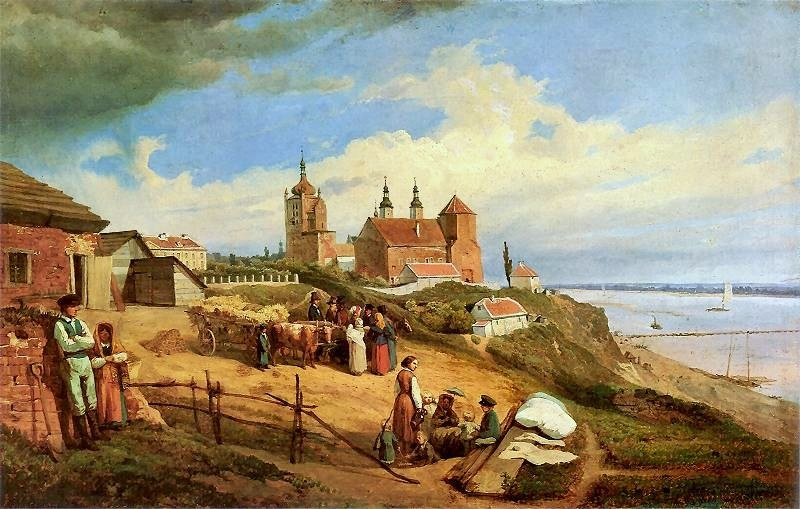

Masovia (Płock / Warsaw)¶
In the 1380s [Historical record]¶
Masovia (Pol. Mazowsze; Lith. Mozūrija) was a cluster of Piast duchies on the middle Vistula, Narew and Bug, in the Polish orbit and bordering both the Order and Lithuania. Janusz I (c. 1347-1429), Duke of Warsaw from 1373/74 and full ruler of the Warsaw-Czersk lands from 1381, married Vytautas’s sister Danutė (Anna) c. 1371-73. His capital was Czersk until 1406, then Warsaw; he gave German (Kulm) law to 24 towns from 1383. In 1382 he seized Podlachian towns as her dowry. When Vytautas fled in late 1382, Janusz refused him shelter and sent him on to the Order. Siemowit IV of Płock was a candidate for the Polish throne in 1382-83 and married Jogaila’s sister Aleksandra in 1387. His brother Henry of Masovia, bishop-elect of Płock, was Jogaila’s secret envoy to Vytautas in 1392 (Ostrów). The Order captured Janusz in 1393 and 1404. The allied army crossed the Vistula on a pontoon bridge above Czerwińsk on 30 June 1410, and Janusz fought at Grunwald. Płock was the see of the bishopric. Sources: VLE; en.wikipedia (Janusz I, Ostrów Agreement).
Masovia (Płock / Warsaw)

Masovia (Płock / Warsaw) · place — Image: Wojciech Gerson, Public domain via Wikimedia Commons¶

Type |
place |
Note |
Piast duchy buffering Poland and Lithuania; refuge of Vytautas in 1382. |
Sensory sketch¶
Sandy plains and pine forest, slow rivers, drained meadows, timber towns with a brick castle or two, and a mixed Polish-Mazovian-Lithuanian crowd. The Vistula at Płock is wide, brown and slow; in spring floods fill the low ground. Roads are tracks; carts sink in mud in March and October. German colonists’ villages with Kulm law bring new wells and field strips. In the saga the warmth of Danutė’s hearth is a rare thing in this cool, careful borderland.
In the saga¶
Danutė’s hall: the first warm room after Krėva and the first refusal. A sister who weeps three times as she embraces him, and a brother-in-law who calculates. The ch. 17 border post is the Masovian-Prussian border (Soldau/Działdowo or Neidenburg sector), with the Order’s stone behind it. Masovia is also where the border forests whisper in 1410 (Book III ch. 16), and the seat of Bishop Henry, Jogaila’s secret envoy.
Getting there¶
From Krėva about 300 km to the Narew/Biebrza frontier and 420 km to Warsaw/Czersk (480-520 km by road; ten to twelve days on horse, four to five weeks on foot through bog). From Czersk to Marienburg 280-320 km (seven to eight days, five to six down the Vistula). Czerwińsk (the 1410 bridge) is some 50 km down the Vistula from Warsaw. Płock is about 100 km north-west of Warsaw. From Kraków to Warsaw is about 250 km straight, eight to ten days by road.
Scenes set here¶
Book I ch. 17 Pasienis (Janusz I in Czersk castle; Danutė; Ona and the children in a small room); Book II ch. 9 Kraujo puta and ch. 10 Astravo sutartis (Henry of Masovia); Book III ch. 15 Tiltas per Vyslą (Czerwińsk), ch. 16 Miško šnabždesiai (the border forests, July 1410).
Relations
Events here: Vytautas shelters with Janusz I in Masovia
Timeline¶
Year |
Event |
Book |
|---|---|---|
1382 |
I · The Wolf’s Exile |
Connections¶
graph LR
ev_masovia_refuge["Vytautas shelters with Janusz I in Masovia"]
masovia["Masovia (Płock / Warsaw)"]
ev_masovia_refuge -->|Location| masovia
style masovia stroke-width:3px